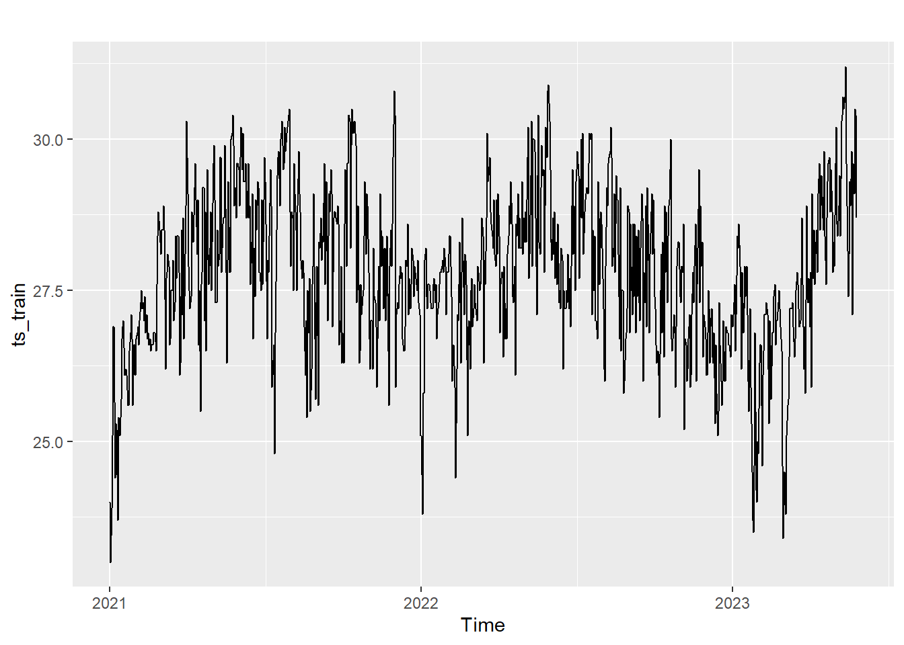

Take-home Exercise 4
Univariate Time Series
1 Load packages
2 Import cleaned data
3 Data Wrangling
Data: Ang Mo Kio
Time period: 2021-2023
Variable: Mean Temperature
# Extract the temperature data into a variable *temp_data*
temp_data <- weather_data %>%
select(c(Station, Date, `Mean Temperature (°C)`, LAT, LONG))
# Filter for a single station, e.g., "Ang Mo Kio"
ang_mo_kio_data <- temp_data %>%
filter(Station == "Ang Mo Kio")
# Change Date to chr type for time series
ang_mo_kio_data$Date <- as.character (ang_mo_kio_data$Date)
str(ang_mo_kio_data)tibble [1,095 × 5] (S3: tbl_df/tbl/data.frame)
$ Station : chr [1:1095] "Ang Mo Kio" "Ang Mo Kio" "Ang Mo Kio" "Ang Mo Kio" ...
$ Date : chr [1:1095] "2021-01-01" "2021-01-02" "2021-01-03" "2021-01-04" ...
$ Mean Temperature (°C): num [1:1095] 24 23 23.9 25.1 26.9 26.9 24.4 25.3 25.2 23.7 ...
$ LAT : num [1:1095] 1.38 1.38 1.38 1.38 1.38 ...
$ LONG : num [1:1095] 104 104 104 104 104 ...Split data into train test split (0.8)
# Sort the data by Date if it's not already sorted
ang_mo_kio_data <- ang_mo_kio_data[order(ang_mo_kio_data$Date), ]
# Split data into training and testing sets based on the 'Date' column
train_size <- floor(nrow(ang_mo_kio_data) * 0.8) # Calculate the size of the training set
train_data <- ang_mo_kio_data[1:train_size, ]
test_data <- ang_mo_kio_data[(train_size + 1):nrow(ang_mo_kio_data), ]Selecting column Date and Mean Temperature (°C)
Create time series object for data train
ts_train <- ts(data = train_clean$`Mean Temperature (°C)`,
start = c(2021,01),
frequency = 365)
autoplot(ts_train)
Create time series object for data test
4 Exploratory plot
4.1 Decomposing a time series means separating it into its constituent components.

5 Create Holt-Winters Model
ME RMSE MAE MPE MAPE MASE
Training set 0.00279363 1.108857 0.7116148 -0.05696726 2.597585 0.5478908
Test set -1.57212418 2.195795 1.8045386 -5.82483639 6.639015 1.3893615
ACF1 Theil's U
Training set 0.03609098 NA
Test set 0.59056765 2.4083035.0.1 Visualization of Holt-Winters Model
6 Create ARIMA
Augmented Dickey-Fuller Test
data: ts_train
Dickey-Fuller = -5.4569, Lag order = 9, p-value = 0.01
alternative hypothesis: stationarySeries: ts_train
ARIMA(2,1,2)
Coefficients:
ar1 ar2 ma1 ma2
0.7994 -0.0464 -1.3154 0.3494
s.e. 0.2239 0.1193 0.2201 0.2042
sigma^2 = 0.8802: log likelihood = -1184.2
AIC=2378.4 AICc=2378.47 BIC=2402.27 Point Forecast Lo 80 Hi 80 Lo 95 Hi 95
2023.4000 29.14213 27.93982 30.34445 27.30335 30.98092
2023.4027 29.15909 27.82335 30.49483 27.11625 31.20193
2023.4055 29.15212 27.74254 30.56170 26.99636 31.30789
2023.4082 29.14576 27.68747 30.60405 26.91550 31.37602
2023.4110 29.14100 27.64829 30.63371 26.85809 31.42390
2023.4137 29.13749 27.61906 30.65592 26.81525 31.45973
2023.4164 29.13490 27.59627 30.67353 26.78177 31.48804
2023.4192 29.13300 27.57777 30.68822 26.75448 31.51151
2023.4219 29.13160 27.56219 30.70100 26.73140 31.53179
2023.4247 29.13056 27.54865 30.71247 26.71124 31.54989
2023.4274 29.12980 27.53654 30.72306 26.69312 31.56648
2023.4301 29.12924 27.52547 30.73302 26.67648 31.58200
2023.4329 29.12883 27.51514 30.74252 26.66091 31.59675
2023.4356 29.12853 27.50536 30.75169 26.64611 31.61094
2023.4384 29.12830 27.49600 30.76061 26.63191 31.62470
2023.4411 29.12814 27.48694 30.76934 26.61814 31.63814
2023.4438 29.12802 27.47811 30.77792 26.60470 31.65133
2023.4466 29.12793 27.46947 30.78639 26.59153 31.66432
2023.4493 29.12786 27.46097 30.79475 26.57857 31.67715
2023.4521 29.12781 27.45259 30.80304 26.56577 31.68985
2023.4548 29.12778 27.44430 30.81126 26.55312 31.70244
2023.4575 29.12775 27.43609 30.81942 26.54057 31.71493
2023.4603 29.12773 27.42795 30.82752 26.52813 31.72733
2023.4630 29.12772 27.41986 30.83557 26.51578 31.73966
2023.4658 29.12771 27.41184 30.84358 26.50351 31.75191
2023.4685 29.12770 27.40386 30.85154 26.49131 31.76409
2023.4712 29.12769 27.39592 30.85947 26.47918 31.77621
2023.4740 29.12769 27.38803 30.86735 26.46711 31.78827
2023.4767 29.12769 27.38018 30.87520 26.45510 31.80028
2023.4795 29.12768 27.37236 30.88301 26.44315 31.81222
2023.4822 29.12768 27.36458 30.89078 26.43126 31.82411
2023.4849 29.12768 27.35684 30.89852 26.41942 31.83595
2023.4877 29.12768 27.34914 30.90623 26.40763 31.84773
2023.4904 29.12768 27.34146 30.91390 26.39590 31.85946
2023.4932 29.12768 27.33383 30.92153 26.38422 31.87114
2023.4959 29.12768 27.32622 30.92914 26.37258 31.88277
2023.4986 29.12768 27.31865 30.93671 26.36100 31.89436
2023.5014 29.12768 27.31110 30.94425 26.34947 31.90589
2023.5041 29.12768 27.30359 30.95176 26.33798 31.91737
2023.5068 29.12768 27.29612 30.95924 26.32654 31.92881
2023.5096 29.12768 27.28867 30.96669 26.31515 31.94020
2023.5123 29.12768 27.28125 30.97411 26.30381 31.95155
2023.5151 29.12768 27.27386 30.98150 26.29251 31.96285
2023.5178 29.12768 27.26650 30.98886 26.28125 31.97411
2023.5205 29.12768 27.25917 30.99619 26.27004 31.98532
2023.5233 29.12768 27.25187 31.00349 26.25887 31.99648
2023.5260 29.12768 27.24459 31.01076 26.24775 32.00761
2023.5288 29.12768 27.23735 31.01801 26.23667 32.01869
2023.5315 29.12768 27.23013 31.02523 26.22563 32.02973
2023.5342 29.12768 27.22294 31.03242 26.21463 32.04072
2023.5370 29.12768 27.21578 31.03958 26.20368 32.05168
2023.5397 29.12768 27.20864 31.04672 26.19276 32.06259
2023.5425 29.12768 27.20153 31.05383 26.18189 32.07347
2023.5452 29.12768 27.19445 31.06091 26.17105 32.08430
2023.5479 29.12768 27.18739 31.06797 26.16026 32.09510
2023.5507 29.12768 27.18036 31.07500 26.14950 32.10585
2023.5534 29.12768 27.17335 31.08201 26.13879 32.11657
2023.5562 29.12768 27.16637 31.08899 26.12811 32.12725
2023.5589 29.12768 27.15941 31.09595 26.11747 32.13789
2023.5616 29.12768 27.15248 31.10288 26.10687 32.14849
2023.5644 29.12768 27.14557 31.10979 26.09630 32.15906
2023.5671 29.12768 27.13868 31.11667 26.08577 32.16959
2023.5699 29.12768 27.13182 31.12354 26.07528 32.18008
2023.5726 29.12768 27.12498 31.13037 26.06482 32.19054
2023.5753 29.12768 27.11817 31.13719 26.05440 32.20096
2023.5781 29.12768 27.11138 31.14398 26.04401 32.21134
2023.5808 29.12768 27.10461 31.15075 26.03366 32.22169
2023.5836 29.12768 27.09786 31.15749 26.02334 32.23201
2023.5863 29.12768 27.09114 31.16422 26.01306 32.24229
2023.5890 29.12768 27.08444 31.17092 26.00281 32.25254
2023.5918 29.12768 27.07776 31.17760 25.99260 32.26276
2023.5945 29.12768 27.07110 31.18425 25.98242 32.27294
2023.5973 29.12768 27.06447 31.19089 25.97227 32.28309
2023.6000 29.12768 27.05785 31.19751 25.96215 32.29321
2023.6027 29.12768 27.05126 31.20410 25.95207 32.30329
2023.6055 29.12768 27.04468 31.21067 25.94201 32.31334
2023.6082 29.12768 27.03813 31.21723 25.93199 32.32336
2023.6110 29.12768 27.03160 31.22376 25.92200 32.33335
2023.6137 29.12768 27.02509 31.23027 25.91204 32.34331
2023.6164 29.12768 27.01860 31.23676 25.90212 32.35324
2023.6192 29.12768 27.01212 31.24323 25.89222 32.36314
2023.6219 29.12768 27.00567 31.24968 25.88235 32.37301
2023.6247 29.12768 26.99924 31.25612 25.87251 32.38284
2023.6274 29.12768 26.99283 31.26253 25.86271 32.39265
2023.6301 29.12768 26.98643 31.26892 25.85293 32.40243
2023.6329 29.12768 26.98006 31.27530 25.84318 32.41218
2023.6356 29.12768 26.97370 31.28165 25.83346 32.42190
2023.6384 29.12768 26.96737 31.28799 25.82377 32.43159
2023.6411 29.12768 26.96105 31.29431 25.81410 32.44125
2023.6438 29.12768 26.95475 31.30061 25.80447 32.45089
2023.6466 29.12768 26.94847 31.30689 25.79486 32.46050
2023.6493 29.12768 26.94220 31.31315 25.78528 32.47008
2023.6521 29.12768 26.93596 31.31940 25.77573 32.47963
2023.6548 29.12768 26.92973 31.32563 25.76620 32.48915
2023.6575 29.12768 26.92352 31.33184 25.75670 32.49865
2023.6603 29.12768 26.91732 31.33803 25.74723 32.50812
2023.6630 29.12768 26.91115 31.34421 25.73779 32.51757
2023.6658 29.12768 26.90499 31.35037 25.72837 32.52699
2023.6685 29.12768 26.89885 31.35651 25.71898 32.53638
2023.6712 29.12768 26.89272 31.36263 25.70961 32.54575
2023.6740 29.12768 26.88661 31.36874 25.70027 32.55509
2023.6767 29.12768 26.88052 31.37483 25.69095 32.56441
2023.6795 29.12768 26.87445 31.38091 25.68166 32.57370
2023.6822 29.12768 26.86839 31.38697 25.67239 32.58296
2023.6849 29.12768 26.86235 31.39301 25.66315 32.59220
2023.6877 29.12768 26.85632 31.39904 25.65394 32.60142
2023.6904 29.12768 26.85031 31.40505 25.64474 32.61061
2023.6932 29.12768 26.84432 31.41104 25.63558 32.61978
2023.6959 29.12768 26.83834 31.41702 25.62643 32.62892
2023.6986 29.12768 26.83237 31.42298 25.61731 32.63804
2023.7014 29.12768 26.82643 31.42893 25.60822 32.64714
2023.7041 29.12768 26.82049 31.43486 25.59914 32.65621
2023.7068 29.12768 26.81458 31.44078 25.59009 32.66526
2023.7096 29.12768 26.80867 31.44668 25.58107 32.67429 ME RMSE MAE MPE MAPE MASE
Training set 0.03777592 0.9354911 0.7423579 0.03391425 2.688186 0.5715608
Test set -1.55415777 1.8291975 1.6636117 -5.76272036 6.124617 1.2808582
ACF1 Theil's U
Training set -0.002187051 NA
Test set 0.454551561 2.007496.1 Visualization of ARIMA Model
7 Create STLM Model
# Create STLM
climate_stlm <- stlm(y= ts_train,
s.window = 356,
method = "arima")
summary(climate_stlm$model)Series: x
ARIMA(3,1,1)
Coefficients:
ar1 ar2 ar3 ma1
0.4536 0.1477 0.0489 -0.9890
s.e. 0.0344 0.0370 0.0343 0.0068
sigma^2 = 0.5041: log likelihood = -940.99
AIC=1891.98 AICc=1892.05 BIC=1915.85
Training set error measures:
ME RMSE MAE MPE MAPE MASE
Training set 0.02123722 0.7079672 0.5637753 0.01390915 2.032402 0.4340655
ACF1
Training set -0.004173344 Point Forecast Lo 80 Hi 80 Lo 95 Hi 95
2023.4000 29.39782 28.48793 30.30772 28.00626 30.78939
2023.4027 29.29445 28.29116 30.29774 27.76005 30.82885
2023.4055 29.58440 28.52630 30.64251 27.96617 31.20263
2023.4082 30.09815 29.00628 31.19002 28.42827 31.76802
2023.4110 29.80276 28.69226 30.91327 28.10440 31.50113
2023.4137 29.35643 28.23473 30.47814 27.64093 31.07193
2023.4164 28.45948 27.33085 29.58811 26.73339 30.18557
2023.4192 28.71166 27.57862 29.84471 26.97882 30.44450
2023.4219 29.31331 28.17734 30.44928 27.57600 31.05063
2023.4247 28.66457 27.52657 29.80256 26.92416 30.40498
2023.4274 29.31552 28.17606 30.45497 27.57287 31.05817
2023.4301 28.36625 27.22569 29.50681 26.62191 30.11058
2023.4329 28.66681 27.52538 29.80824 26.92114 30.41248
2023.4356 28.46725 27.32510 29.60940 26.72049 30.21402
2023.4384 28.51761 27.37484 29.66037 26.76990 30.26531
2023.4411 27.86789 26.72459 29.01119 26.11936 29.61642
2023.4438 28.41813 27.27433 29.56192 26.66885 30.16740
2023.4466 27.81832 26.67408 28.96257 26.06835 29.56830
2023.4493 28.41849 27.27382 29.56317 26.66787 30.16912
2023.4521 27.66865 26.52356 28.81373 25.91740 29.41989
2023.4548 27.11878 25.97330 28.26425 25.36693 28.87063
2023.4575 28.16890 27.02304 29.31476 26.41646 29.92134
2023.4603 26.81902 25.67278 27.96526 25.06600 28.57204
2023.4630 27.56918 26.42257 28.71579 25.81560 29.32277
2023.4658 27.31934 26.17237 28.46632 25.56519 29.07349
2023.4685 28.01950 26.87216 29.16684 26.26479 29.77421
2023.4712 28.16965 27.02195 29.31736 26.41439 29.92491
2023.4740 28.11980 26.97174 29.26787 26.36399 29.87562
2023.4767 28.31995 27.17153 29.46838 26.56359 30.07632
2023.4795 27.22010 26.07132 28.36889 25.46319 28.97702
2023.4822 28.22025 27.07111 29.36939 26.46279 29.97771
2023.4849 28.37040 27.22090 29.51990 26.61239 30.12841
2023.4877 28.42055 27.27069 29.57040 26.66200 30.17910
2023.4904 28.12069 26.97048 29.27091 26.36160 29.87979
2023.4932 27.77084 26.62027 28.92141 26.01120 29.53048
2023.4959 29.37099 28.22006 30.52191 27.61080 31.13117
2023.4986 29.27114 28.11986 30.42241 27.51040 31.03187
2023.5014 29.07128 27.91965 30.22292 27.31001 30.83256
2023.5041 27.92143 26.76944 29.07342 26.15961 29.68325
2023.5068 27.72157 26.56923 28.87392 25.95921 29.48394
2023.5096 28.12172 26.96902 29.27442 26.35882 29.88462
2023.5123 29.07187 27.91881 30.22492 27.30842 30.83531
2023.5151 28.97201 27.81860 30.12542 27.20802 30.73600
2023.5178 29.37216 28.21840 30.52593 27.60763 31.13669
2023.5205 26.87231 25.71819 28.02643 25.10723 28.63738
2023.5233 27.32245 26.16798 28.47693 25.55684 29.08807
2023.5260 27.67260 26.51777 28.82743 25.90644 29.43876
2023.5288 26.82275 25.66756 27.97793 25.05605 28.58945
2023.5315 27.87289 26.71736 29.02843 26.10565 29.64013
2023.5342 28.67304 27.51715 29.82893 26.90526 30.44082
2023.5370 29.37304 28.21680 30.52929 27.60472 31.14137
2023.5397 29.77305 28.61645 30.92965 28.00419 31.54192
2023.5425 29.77306 28.61611 30.93001 28.00365 31.54246
2023.5452 29.37306 28.21576 30.53037 27.60312 31.14301
2023.5479 28.42307 27.26541 29.58073 26.65258 30.19356
2023.5507 29.17308 28.01506 30.33109 27.40205 30.94410
2023.5534 28.77308 27.61472 29.93145 27.00152 30.54465
2023.5562 28.82309 27.66437 29.98181 27.05098 30.59520
2023.5589 28.17310 27.01402 29.33217 26.40045 29.94574
2023.5616 28.47310 27.31368 29.63253 26.69992 30.24629
2023.5644 28.12311 26.96333 29.28289 26.34938 29.89684
2023.5671 29.57312 28.41299 30.73325 27.79885 31.34738
2023.5699 29.32312 28.16264 30.48361 27.54832 31.09793
2023.5726 28.82313 27.66229 29.98396 27.04779 30.59847
2023.5753 29.52314 28.36195 30.68432 27.74725 31.29902
2023.5781 28.57314 27.41160 29.73468 26.79672 30.34956
2023.5808 27.92315 26.76126 29.08504 26.14619 29.70011
2023.5836 27.87316 26.71091 29.03540 26.09566 29.65065
2023.5863 27.32316 26.16057 28.48576 25.54513 29.10120
2023.5890 26.62317 25.46022 27.78612 24.84459 28.40174
2023.5918 28.62317 27.45988 29.78647 26.84406 30.40229
2023.5945 29.02318 27.85953 30.18683 27.24353 30.80283
2023.5973 28.57319 27.40919 29.73719 26.79300 30.35338
2023.6000 28.42319 27.25884 29.58755 26.64247 30.20392
2023.6027 29.17320 28.00850 30.33791 27.39194 30.95446
2023.6055 29.67321 28.50815 30.83826 27.89141 31.45501
2023.6082 29.52321 28.35781 30.68862 27.74088 31.30555
2023.6110 29.12322 27.95746 30.28898 27.34035 30.90609
2023.6137 27.82323 26.65712 28.98934 26.03982 29.60664
2023.6164 27.82346 26.65700 28.98992 26.03952 29.60741
2023.6192 28.42370 27.25689 29.59051 26.63922 30.20818
2023.6219 27.67394 26.50677 28.84110 25.88892 29.45895
2023.6247 28.02417 26.85666 29.19168 26.23862 29.80973
2023.6274 27.42441 26.25655 28.59227 25.63832 29.21050
2023.6301 27.87464 26.70643 29.04286 26.08802 29.66127
2023.6329 26.62488 25.45632 27.79344 24.83772 28.41204
2023.6356 26.97512 25.80620 28.14403 25.18742 28.76281
2023.6384 27.87535 26.70609 29.04461 26.08712 29.66358
2023.6411 26.97559 25.80598 28.14520 25.18682 28.76435
2023.6438 26.37582 25.20586 27.54579 24.58652 28.16513
2023.6466 26.72606 25.55575 27.89637 24.93622 28.51590
2023.6493 26.57630 25.40563 27.74696 24.78592 28.36667
2023.6521 26.82653 25.65552 27.99754 25.03563 28.61744
2023.6548 27.77677 26.60541 28.94813 25.98533 29.56821
2023.6575 26.62700 25.45530 27.79871 24.83503 28.41898
2023.6603 26.32724 25.15518 27.49930 24.53473 28.11975
2023.6630 27.97748 26.80507 29.14988 26.18443 29.77052
2023.6658 28.22771 27.05496 29.40047 26.43414 30.02129
2023.6685 26.07795 24.90484 27.25105 24.28384 27.87206
2023.6712 28.32818 27.15473 29.50164 26.53354 30.12283
2023.6740 27.92842 26.75462 29.10222 26.13325 29.72359
2023.6767 27.77866 26.60451 28.95281 25.98295 29.57436
2023.6795 28.17889 27.00439 29.35339 26.38265 29.97513
2023.6822 27.77913 26.60428 28.95397 25.98235 29.57590
2023.6849 28.32936 27.15417 29.50456 26.53206 30.12667
2023.6877 28.07960 26.90406 29.25514 26.28176 29.87744
2023.6904 27.87912 26.70323 29.05502 26.08075 29.67749
2023.6932 28.12865 26.95241 29.30489 26.32975 29.92755
2023.6959 28.77817 27.60159 29.95476 26.97874 30.57761
2023.6986 27.02770 25.85076 28.20463 25.22773 28.82766
2023.7014 27.57722 26.39994 28.75450 25.77672 29.37772
2023.7041 28.52675 27.34912 29.70437 26.72572 30.32777
2023.7068 28.82627 27.64829 30.00425 27.02471 30.62783
2023.7096 28.97579 27.79747 30.15412 27.17370 30.77788 ME RMSE MAE MPE MAPE MASE
Training set 0.02123722 0.7079672 0.5637753 0.01539662 2.040041 0.4340654
Test set -0.92999525 1.5477016 1.2977256 -3.49412016 4.766063 0.9991529
ACF1 Theil's U
Training set -0.004173344 NA
Test set 0.481711859 1.6950647.1 Visualization of STLM using ARIMA method

7.2 Univariate Time Series Exploration of Rainfall
In this section, we focus on the variable “Daily Rainfall Total (mm)” for one weather station, Ang Mo Kio .
7.2.1 Data preparation: Extract rainfall data for Ang Mo Kio
# Extract the rainfall data into a variable *rain_data*
rain_data <- weather_data %>%
select(c(Station, Date, `Daily Rainfall Total (mm)`, LAT, LONG))
str(rain_data)tibble [7,665 × 5] (S3: tbl_df/tbl/data.frame)
$ Station : chr [1:7665] "Ang Mo Kio" "Ang Mo Kio" "Ang Mo Kio" "Ang Mo Kio" ...
$ Date : Date[1:7665], format: "2021-01-01" "2021-01-02" ...
$ Daily Rainfall Total (mm): num [1:7665] 94.4 114.4 5.2 0 0 ...
$ LAT : num [1:7665] 1.38 1.38 1.38 1.38 1.38 ...
$ LONG : num [1:7665] 104 104 104 104 104 ...# Filter for a single station, e.g., "Ang Mo Kio"
ang_mo_kio_data <- rain_data %>%
filter(Station == "Ang Mo Kio")
str(ang_mo_kio_data)tibble [1,095 × 5] (S3: tbl_df/tbl/data.frame)
$ Station : chr [1:1095] "Ang Mo Kio" "Ang Mo Kio" "Ang Mo Kio" "Ang Mo Kio" ...
$ Date : Date[1:1095], format: "2021-01-01" "2021-01-02" ...
$ Daily Rainfall Total (mm): num [1:1095] 94.4 114.4 5.2 0 0 ...
$ LAT : num [1:1095] 1.38 1.38 1.38 1.38 1.38 ...
$ LONG : num [1:1095] 104 104 104 104 104 ...7.2.2 Time series plot
7.2.3 Seasonality and Trend Analysis
Done using the stl() function for seasonal-trend decomposition using LOESS.
7.2.4 Autocorrelation Analysis
To help with identifying how values are related to their lagged versions.
7.2.5 Stationarity Check
Many forecasting models assume that the time series is stationary. Use the Augmented Dickey-Fuller (ADF) test to check for stationarity.
7.2.6 Distribution of the Variable
Examine the distribution of your variable to identify any skewness, kurtosis, or outliers.